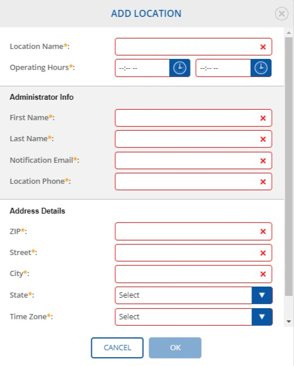
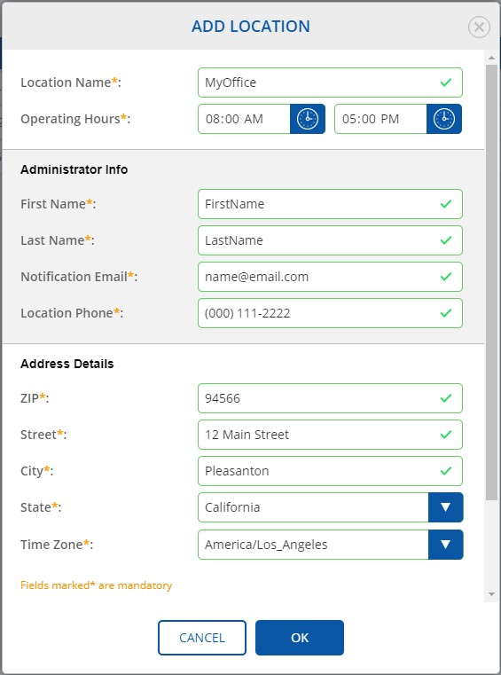

7. Settings
/
7.2 Locations
Parent topic
:
7.2 Locations
7.2.2 Add/Edit Location
A doctor is able to add more than one location.
Click
Settings
Tab at the Navigation Panel.
Click
Locations
at
Settings
at the Navigation Panel.
Click
ADD
button.
Observe that
ADD LOCATION
dialog appears.

Populate the required fields.

Note:
Time Zone is added automatically based on ZIP information.
Note:
At least, one location should be added by a user to publish a job posting.